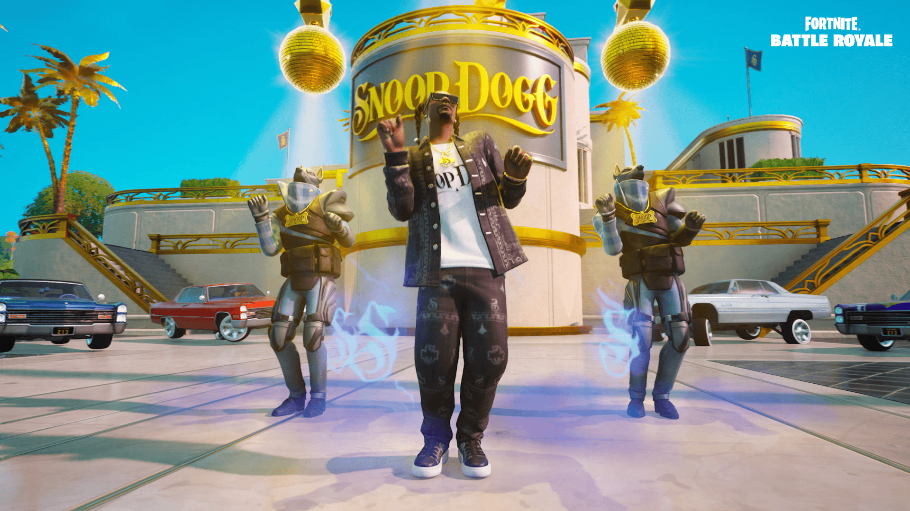

Közösség kialakulása!
Különleges események és kollaborációk A Fortnite közösség különböző események során is egyesül, például koncertek, mint Travis Scott vagy Ariana Grande fellépései, ahol a játékosok együtt élhetik át az eseményeket, miközben szórakoznak. Ezen kívül a különböző zenészek, mint Ice Spice és Snoop Dogg, szintén részt vesznek a közösségi élményekben, ami tovább erősíti a közösségi érzést A Fortnite közösségek tehát rendkívül sokféle élményt kínálnak, és bárki megtalálhatja a számára legszimpatikusabb platformot vagy eseményt. Ha szeretnél csatlakozni, rengeteg helyen találsz érdekes és aktív közösségeket, amelyek szórakoztatnak és segítenek a fejlődésben.
